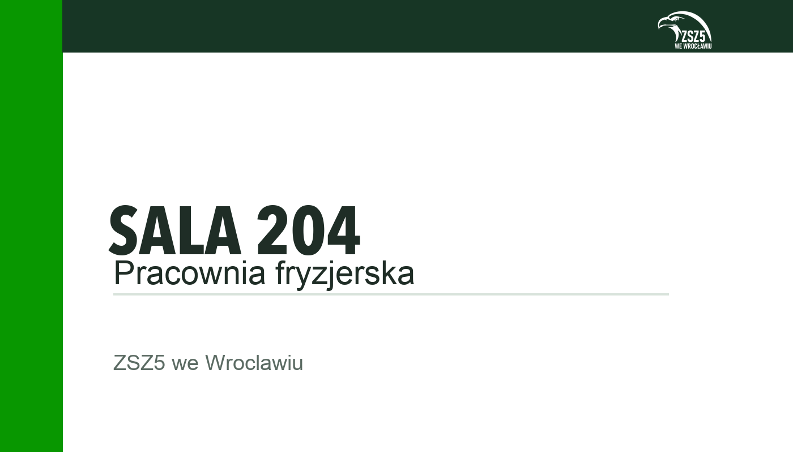
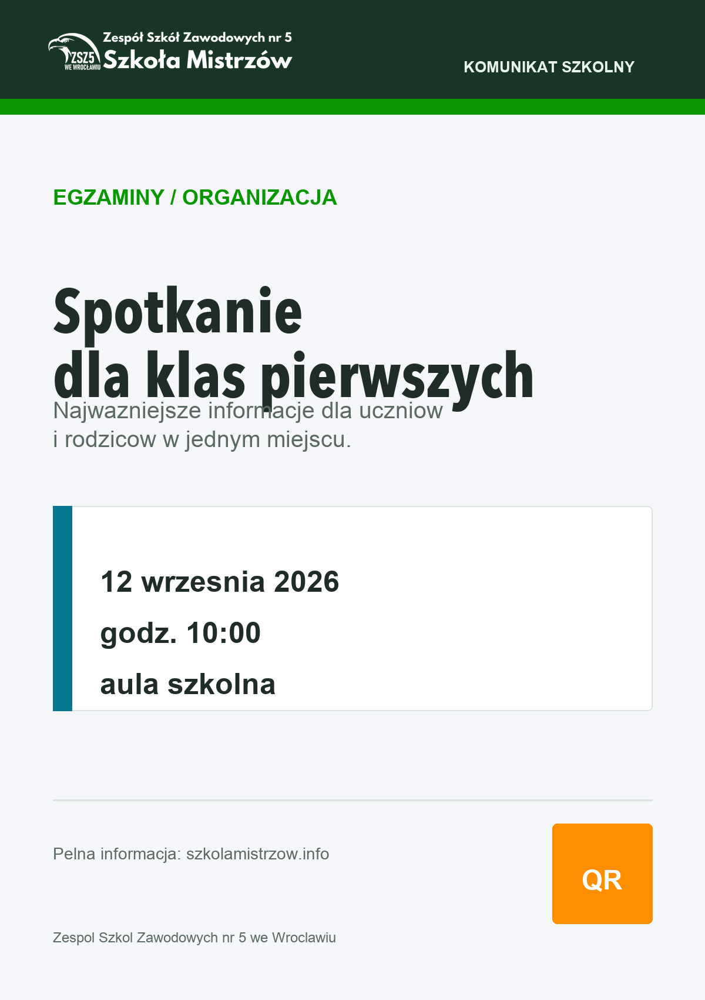
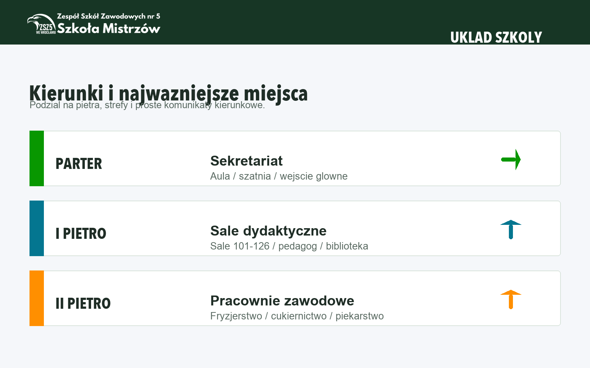

Wersja ciemna
Do jasnych teł, dokumentów, tabliczek, stopki plakatu i materiałów drukowanych.
Księga znaku
Zasady używania znaku, kolorów, typografii, tabliczek na sale i plakatów informacyjnych szkoły.
Sektorowo. Konkretnie. Po mistrzowsku.
Podstawą systemu jest orzeł z napisem ZSZ5 we Wrocławiu oraz szeroki lockup z nazwą szkoły i hasłem Szkoła Mistrzów. Znak ma identyfikować materiał, nie zastępować treści.
Do jasnych teł, dokumentów, tabliczek, stopki plakatu i materiałów drukowanych.
Do ciemnych belek, tablic kierunkowych, zdjęć z przyciemnionym pasem i ciemnych plansz.
Do nagłówków, prezentacji, stron WWW i plakatów, gdy trzeba pokazać pełną nazwę szkoły.
Paleta porządkuje istniejącą zieleń ZSZ5 i dodaje kolory funkcjonalne: ciemną zieleń do oficjalnych belek, niebieski do informacji organizacyjnych i pomarańcz wyłącznie do pilnych terminów.
#173625#089700#047690#FF8F00#F5F7FA#E8F5E8#1F2D26#D8E3DBNagłówki, numery sal, tytuły tablic i duże daty.
Tekst informacyjny, opisy, listy i komunikaty dla uczniów oraz rodziców.
Tylko materiały uroczyste: zaproszenia, dyplomy, cytaty i publikacje.
Tabliczka ma być prostsza niż plakat. Jej zadanie to szybka identyfikacja sali: numer lub funkcja, krótki opis i znak szkoły. Bez opiekuna sali i bez informacji tymczasowych.

Plakat szkolny ma prowadzić do jednej decyzji odbiorcy. Nie powinien być regulaminem, gazetką ani zbiorem wielu spraw naraz.

Sprawy organizacyjne, zebrania, konsultacje, informacje sekretariatu. Kolor: Workshop Blue.
Nabór, drzwi otwarte, oferta zawodów, spotkania dla ósmoklasistów. Kolor: ZSZ Green.
Matura, egzaminy zawodowe, deklaracje, listy sal. Kolor: Deep Forest z akcentem Craft Amber.
Wayfinding ma najpierw prowadzić, dopiero potem budować klimat. Ten sam kolor powinien powtarzać się na tablicy wejściowej, strzałkach i tabliczkach przy salach.

Poniżej są dokumenty zasad oraz grafiki poglądowe do wykorzystania przy projektowaniu materiałów szkolnych.
Pełny guideline: znak, kolory, typografia, tabliczki, kierunki i checklista.
Osobny guideline dla komunikatów, rekrutacji, egzaminów, wydarzeń i pilnych zmian.